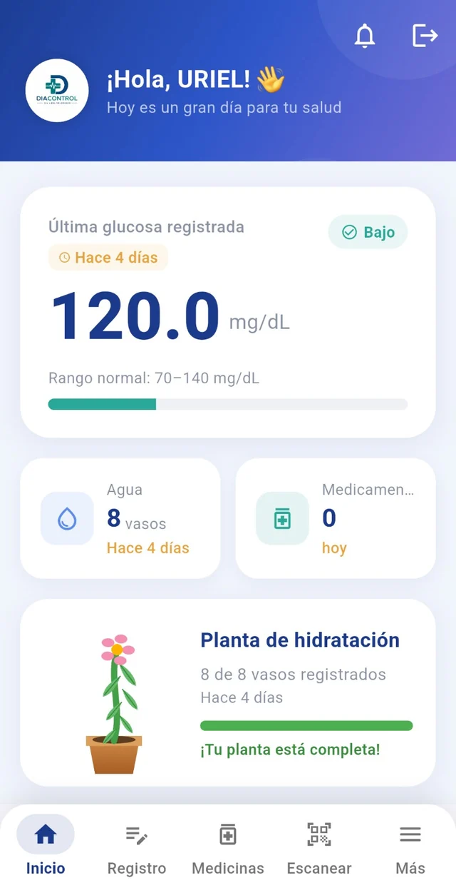
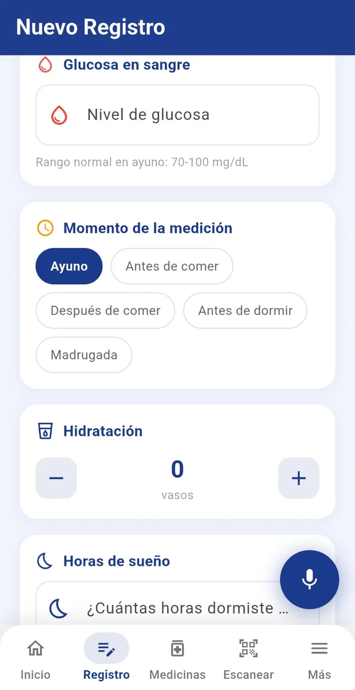
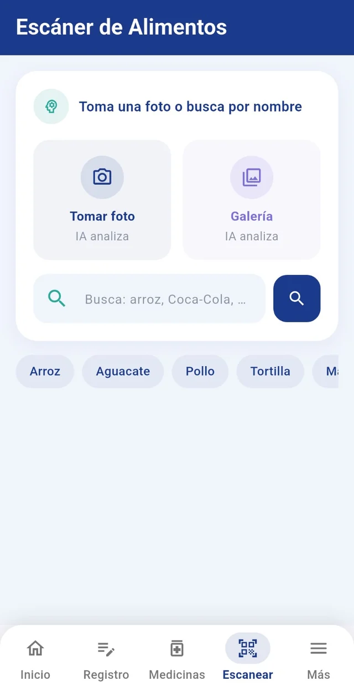
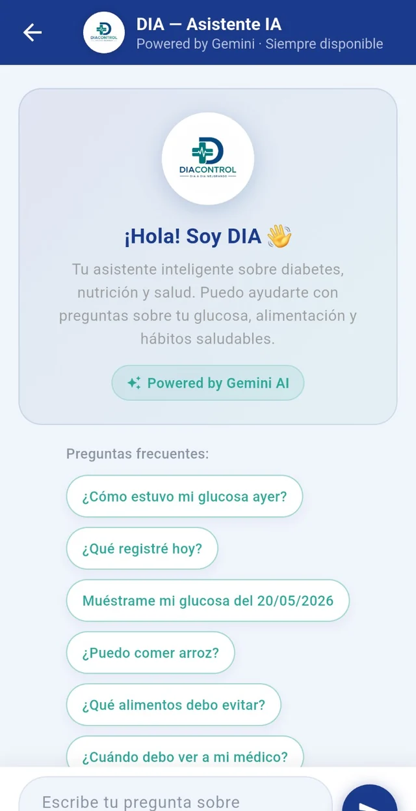
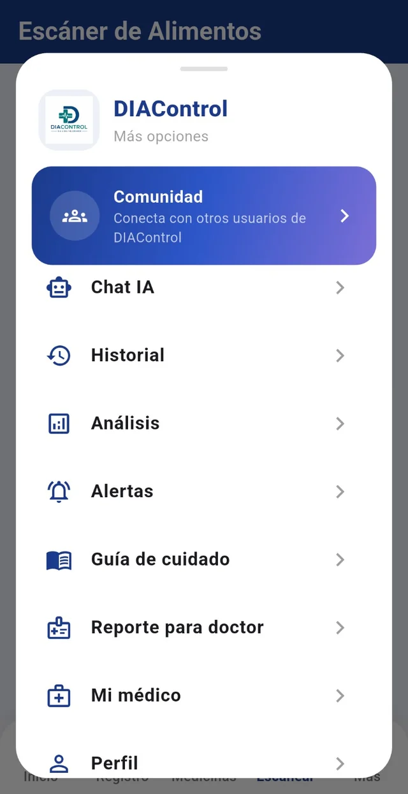

♥01
Glucosa
Registra tus niveles y consulta su evolución.
Registra tus hábitos, comprende tu información y cuenta con herramientas inteligentes para cuidar mejor de ti.

DIAControl reúne en un solo espacio el seguimiento de tu salud, tus hábitos y herramientas inteligentes diseñadas para hacer más sencillo el autocuidado.
Consulta de forma clara tu información reciente y observa cómo avanzan tus registros, desde la glucosa y la hidratación hasta tus hábitos diarios.
Glucosa, hidratación, sueño, alimentación y otros hábitos pueden formar parte de una visión más completa de tu día a día.


Explora alimentos y productos con ayuda de inteligencia artificial. Escanea o búscalos por nombre para obtener información que te ayude a tomar decisiones más conscientes.
Desde el registro cotidiano hasta la asistencia inteligente, DIAControl conecta las piezas que forman parte de tu cuidado diario.
Registra tus niveles y consulta su evolución.
Lleva el control de tus vasos de agua durante el día.
Consulta y organiza información relacionada con tus medicamentos.
Conserva tus registros para consultar tu información cuando la necesites.
Observa tus datos y encuentra una perspectiva más completa de tu seguimiento.
Recibe recordatorios y señales para mantener la continuidad de tus hábitos.
Convierte tus registros en información organizada para compartir durante tu atención médica.
Un espacio pensado para conectar con otros usuarios de DIAControl.
DIA es el asistente inteligente de DIAControl. Puede ayudarte a consultar información sobre tus registros, alimentación y hábitos saludables mediante conversación.


Desde un mismo espacio puedes acceder a herramientas pensadas para distintos momentos de tu seguimiento y autocuidado.
Entre una consulta y otra existen decisiones pequeñas que se repiten todos los días. DIAControl ayuda a convertirlas en registros claros, hábitos medibles e información útil para comprender tu evolución.
Prevalencia de diabetes en adultos mexicanos.
Adultos mexicanos con prediabetes.
Acompañar el autocuidado diario y facilitar una mejor conversación con el profesional de la salud.
Glucosa, alimentación, hidratación, medicamentos, sueño y actividad pueden convertirse en una visión más organizada de tus hábitos y tu seguimiento.
La experiencia conecta el acompañamiento médico con el día a día del usuario: desde el acceso hasta el seguimiento y la preparación de información para la consulta.
DIAControl puede formar parte del acompañamiento preventivo recomendado por el profesional de la salud.
El usuario activa y vincula su cuenta para comenzar su experiencia personalizada.
Registra tus hábitos y utiliza herramientas como el escáner de alimentos y el asistente DIA.
Tus registros pueden organizarse en reportes para llevar información útil a la consulta médica.
Una experiencia práctica para registrar hábitos, consultar información y mantener continuidad en el autocuidado.
La propuesta busca extender el seguimiento fuera del consultorio mediante información estructurada y herramientas de comunicación.
La información relacionada con la salud requiere un cuidado especial. Por eso la experiencia contempla privacidad, consentimiento, control de acceso y protección de datos.
Prevención, tratamiento y control de la diabetes mellitus.
Intercambio y seguridad de información en registros electrónicos.
Referencia para la estructura y confidencialidad de reportes.
Consentimiento, privacidad, derechos ARCO y protección de datos.
Un espacio para compartir hábitos, avances y momentos del día con otras personas que también buscan cuidar mejor de sí mismas, manteniendo la privacidad como parte esencial de la experiencia.
Cada registro puede convertirse en información útil para comprender tus hábitos, mantener continuidad y llevar una visión más organizada a la consulta.